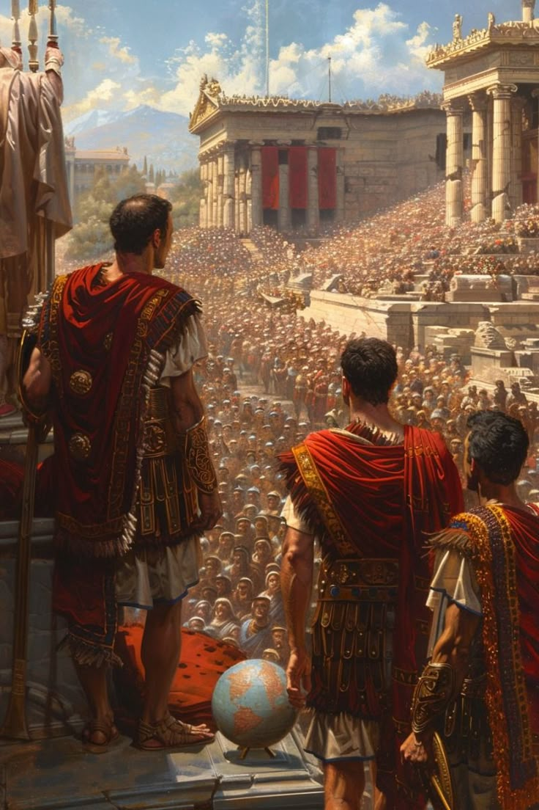

El Imperio Romano fue la etapa de mayor expansión y poder político de Roma. Comenzó en el 27 a.C. cuando Octavio, conocido como Augusto, asumió el poder absoluto y se convirtió en el primer emperador.
Augusto reorganizó el Estado, mantuvo la paz interna y fortaleció las instituciones, aunque el control real estaba en sus manos. Aunque las estructuras republicanas seguían existiendo, el emperador tenía la autoridad suprema.
Durante los primeros siglos, Roma conquistó vastos territorios en Europa, Asia y África. Su influencia se extendía desde Britania hasta Egipto y desde Hispania hasta Siria, formando uno de los imperios más grandes de la historia.
Se vivió un largo período de estabilidad conocido como la Paz Romana, en el que se desarrollaron ciudades, acueductos, caminos, templos y una red comercial eficiente a lo largo del Mediterráneo.
El Imperio Romano integró diversas culturas bajo un mismo sistema político. Inicialmente politeísta, el Imperio se transformó religiosamente tras la legalización del cristianismo en el siglo IV, convirtiéndose luego en religión oficial.
En el siglo III comenzaron las crisis internas, con guerras civiles, invasiones bárbaras y problemas económicos. El Imperio se dividió en dos: el de Occidente y el de Oriente (con capital en Bizancio, luego Constantinopla).
En el año 476 d.C., el último emperador romano de Occidente fue depuesto. Este hecho marcó el fin del Imperio Romano Occidental, aunque el de Oriente continuó por casi mil años más como el Imperio Bizantino.
